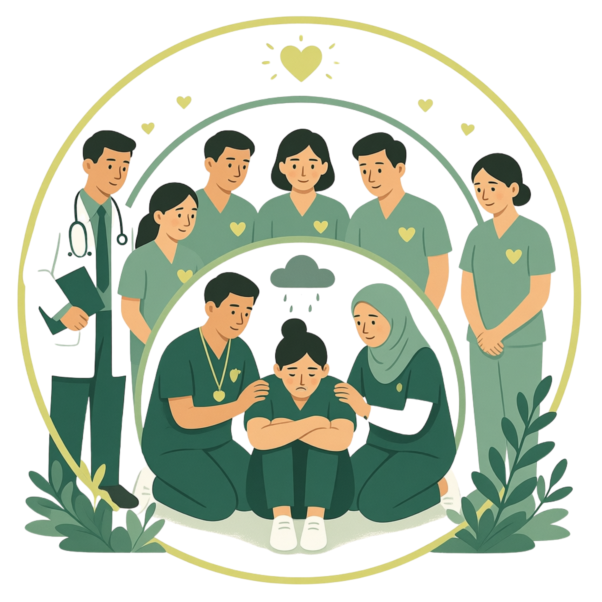

- Patient safety incidents can turn involved healthcare workers (HCWs) into second victims: psychological distress, burnout, and loss of professional confidence.
- Most support programmes depend on self-referral, so the affected population remains unknown.
- International consensus now uses support provided / second victims identified as a core indicator,1 yet reports from Southeast Asia are scarce.
To describe how Wellness Warriors are integrated with second victim management and root cause analysis (RCA), and to map programme performance against 11 international consensus indicators.
- Design
- Descriptive implementation study, document review
- Setting
- RSCM, Indonesia's national referral hospital (~5,300 staff, 57 units)
- Period
- January to August 2026
- Framework
- Scott's three-tiered model;2 25-item Indonesian SVEST;3 11 consensus indicators1

Likert 0 to 4. Positively worded support items are reverse-scored, so a higher score always means a worse condition. Cut-off = 75% of each domain maximum.
- Median 32 HCWs per event (range 18 to 52)
- Most affected: trainees and nurses
- 3 of 9 cases still in progress
- Mean time from incident to first contact: [___ days]
■ Awareness
■ Process / structure
■ Impact
■ Not yet measured
From self-referral to proactive case-finding. Linking second victim identification to every sentinel event RCA produced a known denominator of 280 HCWs across 9 events. This puts into practice the observation that institutions can screen at-risk professionals immediately after an event,4 and makes the consensus indicator support provided / second victims identified measurable.1
Peer support first. In the SVEST validation study, the most desired form of support was a respected peer to discuss what happened.3 Wellness Warriors (136 in 57 units) put this into practice as Tier 2, in line with the European recommendation for peer support programmes.5
Patient safety and worker well-being in one pathway. Embedding support in a non-punitive RCA connects incident learning with staff care and supports a just culture.5
Early SVEST data. Returns are still low (15.8%) because collection is ongoing, and no respondent has reached a domain cut-off so far. These early results should be interpreted with caution.
Next step: impact indicators. Second victim distress has been linked to turnover intention and absenteeism, mediated by organisational support.6 Measuring distress before and after support, qualitative feedback, and lost workdays is the next priority.
Limitations. Single-centre document review; the Indonesian SVEST validation is unpublished institutional data.
Integrating Wellness Warriors, second victim management, and system-based RCA establishes a non-punitive organisational framework. It can be implemented in hospitals with existing incident review structures and is a foundation for sustainable healthcare worker well-being.